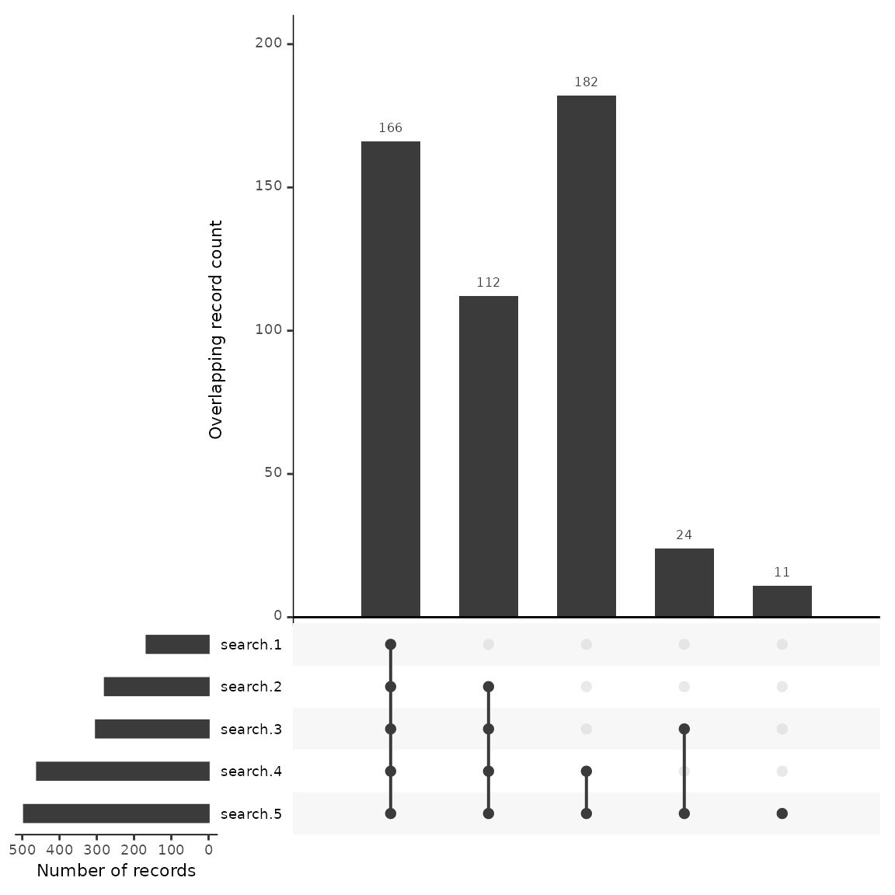

New Benchmark Testing
2024-08-22
Source:vignettes/citesource_new_benchmark_testing.Rmd
citesource_new_benchmark_testing.RmdAbout this vignette
When estimating the comprehensiveness of a search, researchers often compile a list of relevant studies and evaluate whether or not they are found using their search strategy. While benchmarking is an important step in testing the sensitivity of a search, this process can be time consuming if variations of a string are being tested.
This vignette will provide an example of how CiteSource can be used to speed up the process of benchmarking especially when comparing variations of search strings or search strategies.
1. Installation of packages and loading libraries
Use the following code to install CiteSource. Currently, CiteSource lives on GitHub, so you may need to first install the remotes package. This vignette also uses functions from the ggplot2 and dplyr packages.
#Install the remotes packages to enable installation from GitHub
#install.packages("remotes")
#library(remotes)
#Install CiteSource
#remotes::install_github("ESHackathon/CiteSource")
#Load the necessary libraries
library(CiteSource)
#library(ggplot2)
#library(dplyr)2. Import citation files
Users can import multiple .ris or .bib files into CiteSource, which the user can label with source information such as database or platform. In this case we are uploading the results from five different strings, which were run in Web of Science.
#Import citation files from a folder
file_path <- "../vignettes/new_benchmark_data/"
citation_files <- list.files(path = file_path, pattern = "\\.ris", full.names = TRUE)
#Print citation_files to double check the order in which R imported the files.
citation_files
#> [1] "../vignettes/new_benchmark_data//benchmark_15.ris"
#> [2] "../vignettes/new_benchmark_data//search1_166.ris"
#> [3] "../vignettes/new_benchmark_data//search2_278.ris"
#> [4] "../vignettes/new_benchmark_data//search3_302.ris"
#> [5] "../vignettes/new_benchmark_data//search4_460.ris"
#> [6] "../vignettes/new_benchmark_data//search5_495.ris"
# Create a tibble that contains metadata about the citation files
imported_tbl <- tibble::tribble(
~files, ~cite_sources, ~cite_labels,
"benchmark_15.ris", NA, "benchmark",
"search1_166.ris", "search 1", "search",
"search2_278.ris", "search 2", "search",
"search3_302.ris", "search 3", "search",
"search4_460.ris", "search 4", "search",
"search5_495.ris", "search 5", "search"
) %>%
# Append the file path to each file name in the 'files' column
dplyr::mutate(files = paste0(file_path, files))
# Read in citations using metadata table
raw_citations <- read_citations(metadata = imported_tbl)
#> Import completed - with the following details:
#> file cite_source cite_string cite_label citations
#> 1 benchmark_15.ris <NA> <NA> benchmark 15
#> 2 search1_166.ris search 1 <NA> search 166
#> 3 search2_278.ris search 2 <NA> search 278
#> 4 search3_302.ris search 3 <NA> search 302
#> 5 search4_460.ris search 4 <NA> search 460
#> 6 search5_495.ris search 5 <NA> search 4953. Deduplication and source information
CiteSource allows users to merge duplicates while maintaining information in the cite_source metadata field. Thus, information about the origin of the records is not lost in the deduplication process. The next few steps produce the dataframes that we can use in subsequent analyses, along with a summary of records from each source.
#Deduplicate citations. This yields a dataframe of all records with duplicates merged, but the originating source information maintained in a new variable called cite_source.
unique_citations <- dedup_citations(raw_citations)
#Count number of unique and non-unique citations from different sources and labels
n_unique <- count_unique(unique_citations)
#For each unique citation, determine which sources were present
source_comparison <- compare_sources(unique_citations, comp_type = "sources")
#Initial upload/post internal deduplication table creation
initial_records_search <- calculate_initial_records(unique_citations, labels_to_include = "search")
initial_record_table_search <- create_initial_record_table(initial_records_search)
initial_record_table_search4. Upset plot to compare discovery of benchmarking articles
An upset plot is useful for visualizing overlap across multiple sources and provides detail about the number of shared and unique records. Using this data we’ll outline a few potential uses when benchmarking testing a search.
We have uploaded 15 benchmarking articles. Of these 15 articles, the upset plot shows us that all but 4 were found across the five searches. We can see the number of benchmarking articles that were discovered by each string as well as the number of articles that were shared between searches.
#Generate a source comparison upset plot.
plot_source_overlap_upset(source_comparison, decreasing = c(TRUE, TRUE))
Looking at the first column, we see that 9 benchmarking articles were found across every search. One may hypothesize that the 157 citations that follow in the second column may have a high number of relevant articles due to the fact that they were also discovered across the five searches. If a researcher was interested in building a larger group of benchmarking articles, they may want to review these articles first.
Looking at the plot we can see that search #4 and #5 have the largest number of results, at close to 500 each. Of these, 180 are unique to those two searches. We can also see that search #4 and #5 found two of the benchmarking articles that would not have been found otherwise. While a researcher may want to ensure that they capture the highest number of benchmarking articles, the addition of close to 200 articles more than search #2 and #3 may not be efficient when the result is only 2 benchmarking articles. Instead of including this search in their final strategy, they may consider reviewing the two articles that were found by this search and work to adjust their other searches instead.
Another decision in this case may be to drop search #2 and #3 as each of these strings do not contribute uniquely to the discovery of any benchmarking articles. While the data backs up this decision, there may also be more to consider. For example, if benchmarking articles are biased for any known reason, certain search strategies may be employed with an understanding that benchmarking data may not accurately reflect their potential contribution. (e.g. benchmarking articles were gathered from previous systematic reviews that focused on a specific geographic region and the current review is global in nature).
Finally, as we’ll see in the next step, we can examine closely the four articles that weren’t found in any search approach. This will help us adjust our search to better capture relevant studies.
5. Reviewing the record table
This record table is helpful in reviewing which citations were found across each database as well as quickly checking to see which benchmarking articles were not found in the search.
unique_citations %>%
dplyr::filter(stringr::str_detect(cite_label, "benchmark")) %>%
record_level_table(return = "DT")